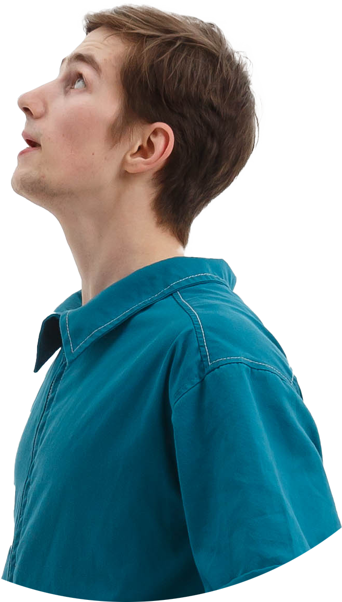
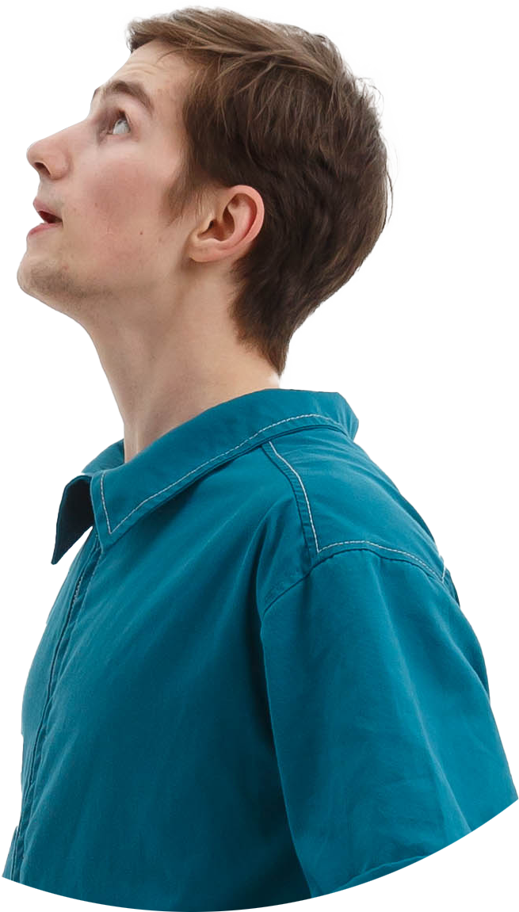

что в результате?
В результате мы всегда работаем с культурным продуктом. Итог первого года обучения для детей — карнавал,
миротворческой резиденции Rebels for Peace
в Германии — спектакль DoMiNo, международного
партнёрства — перфоманс Circus.Brahms на фестивале
Балансировка.
В основе нашего метода — желание менять
и умение действовать. Наша команда работает для того, чтобы
создавать совместный культурный продукт: фестиваль, программу,
перфоманс. Мы не можем позволить себе бездействовать
и только говорить, это цирк!
За нас лучше скажут зрители, которые были
на спектаклях:
 
